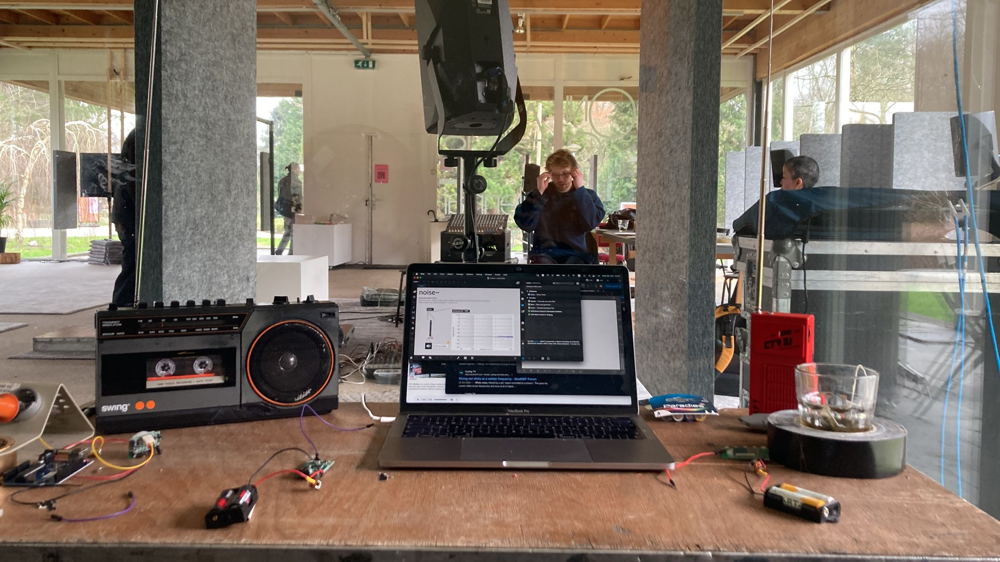

_FM transmitters
A selection of radio works
2025_Open Air Radio_for the Topographies Sonore festival in Albi France, we installed an interactive sound installation in the Saint-Salvy cloister garden using an interconnected network of FM transmitters and transistor radios. The sonically charged space reacted to gusts of wind, pigeon flight, and the sound of visitors moving around the space in subtle feedback and noise, creating a multi-layered sounding environment. In collaboration with Jacob Eckhardt, we explored the potential of a live soundscape radio project where through open mics, visitors could playback sounds from their phones into the spatial installation. The interactive space was recorded for playback on Radio Albige (airing Feb 2025), a local grassroots radio project.
_28.01.2025 @Saint-Salvy Cloister
2024_Breathing Spaces_was a groupshow of up-and-coming sound artists selected for the Sonic Acts Biennale 2024. The meetings were held at Zone2Source artspace in Amsterdam and involved investigations of sound & space within the context of the 2024 biennale programme through the mentorship of composer and educator, Ji Youn Kang. Here, I developed and presented the performance/installation "The Backyard", a collection of field-recordings made during the working period played-back through an open wireless feedback system with FM transmitters and receivers that were mapped through a Max patch for delays and textures. The installation interlaced a sound journal of the residency with the live exhibition space and radio on-air.


_28.02.2024 @Zone2Source

_voronoi diagram
2023_Corpus ii_was a live performance of Corpus i through a 4-channel speaker configuration and three receiver radios; spatialized according to the voronoi principle. Here the performer's movements in space interacts with the FM transmission and electromagnetic waves, adding dynamics to the live sound performance.
_ii.10.9.2023_another Landhaus
2022_Kairos_is a sound collage commissioned for Refuge Radio Berlin as a part of Alifiyah Imani's artistic research on Sonic Rituals. The piece constructs sonic clusters of events that happened in 2022 as an interpretation of kairos, or non-linear time, and how memories take on the retrospective marker of time. The composed situations play with the proximities of encounter with the social-political landscape of Berlin. By drawing in major events: the Artemis launch, war on Ukraine, feminist protests in Iran, and how these remembrances entwine with our ordinary soundscapes, it achieves an abstracted journalism or journaling of events from an individual perspective. The audio samples that mark each sonic event was taken from Instagram. Full stream here.

_untimely
2022_Floating basin_is a sound essay broadcasted on Cashmere Radio as a part of a cumulative work on Diasporic Listening to Berlin soundscapes with artist Yara Mekawei. The site chosen for this investigation is Floating